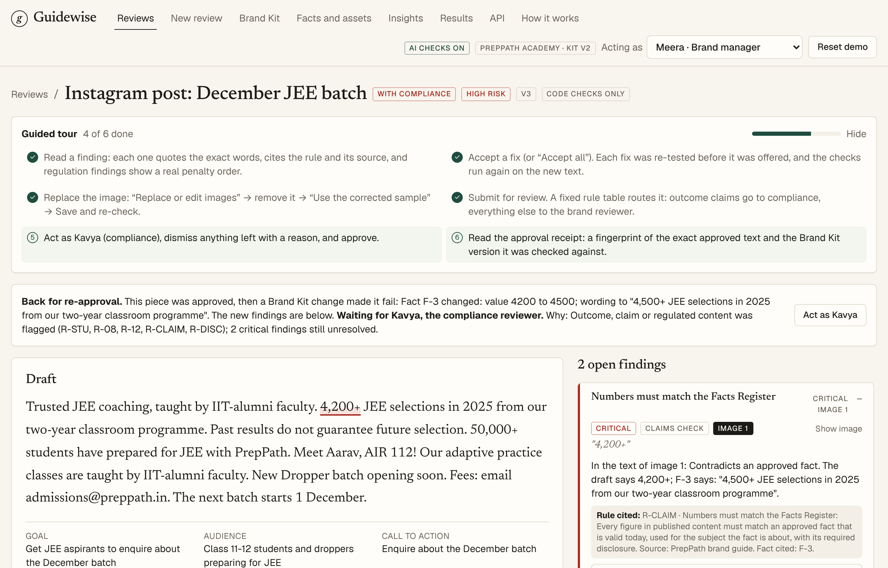
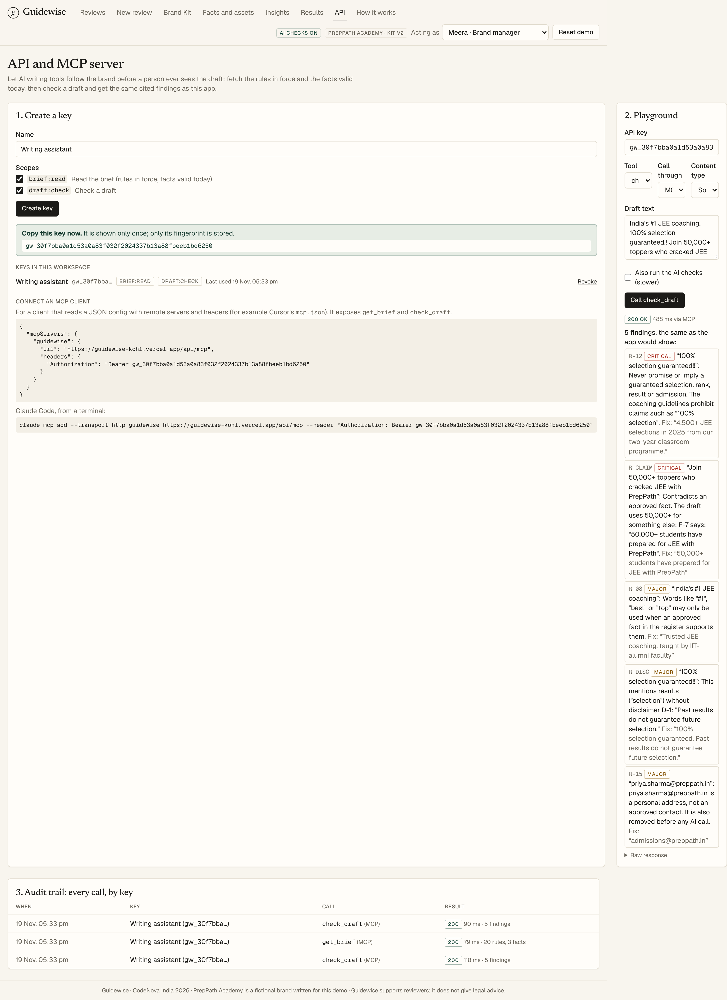
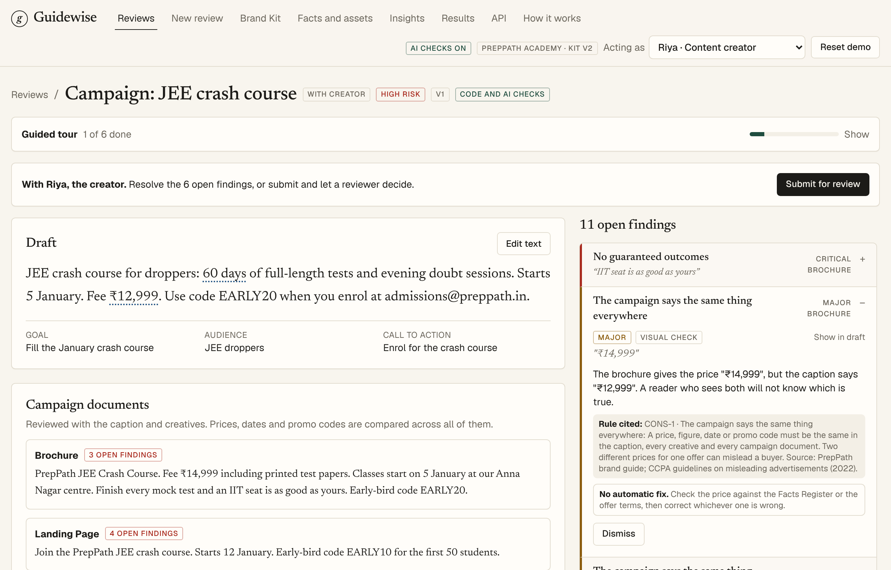
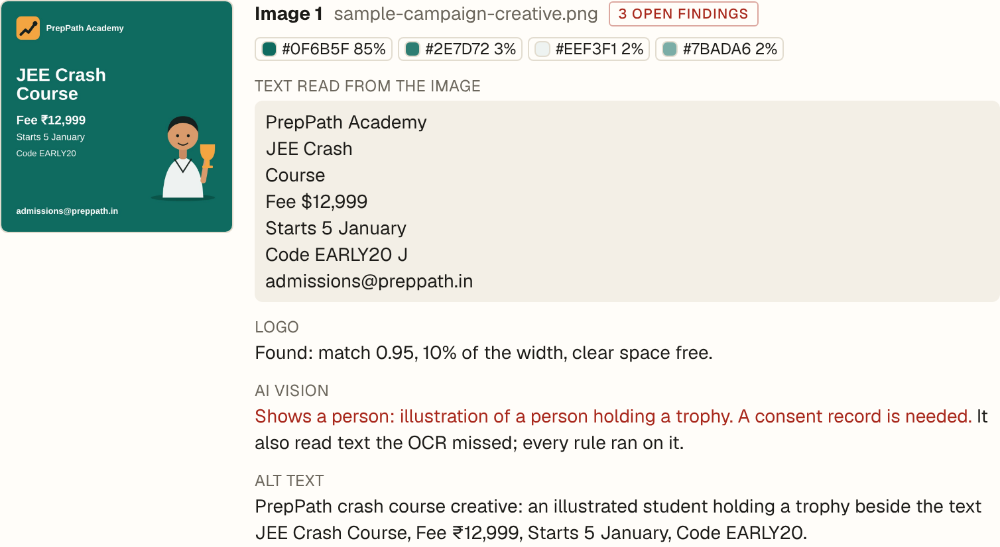
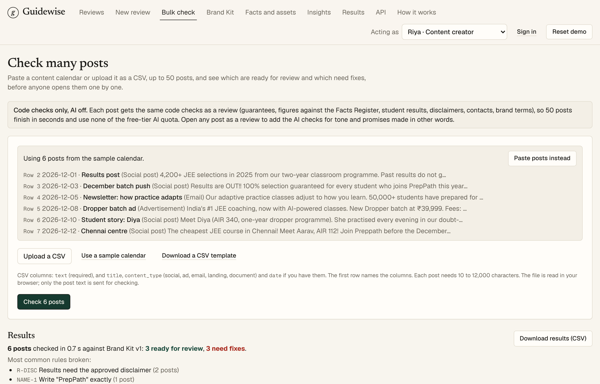
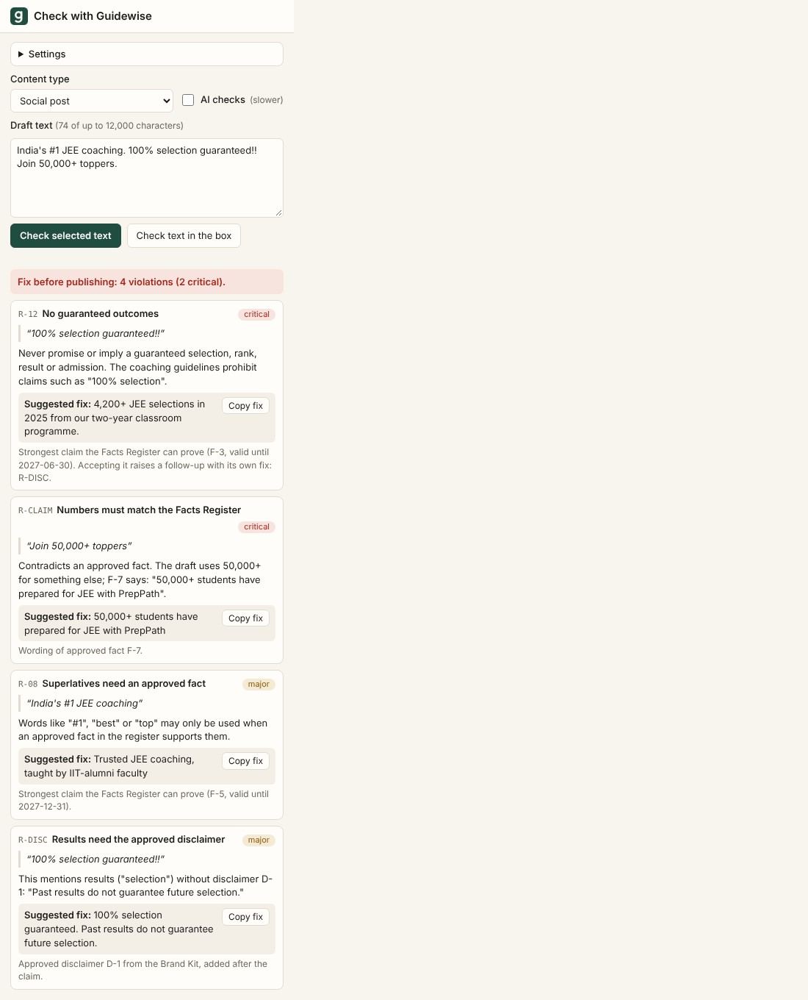
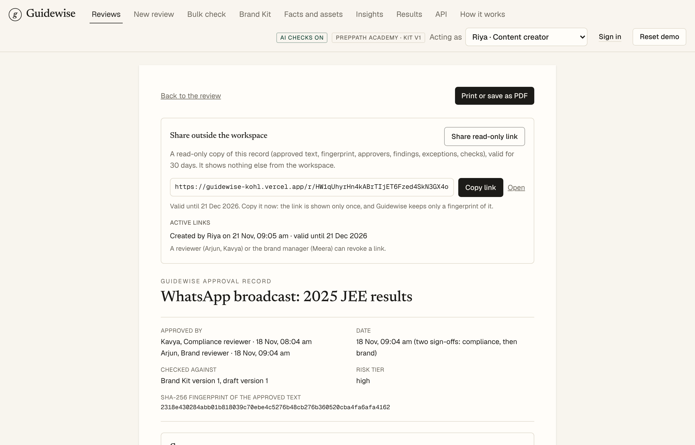
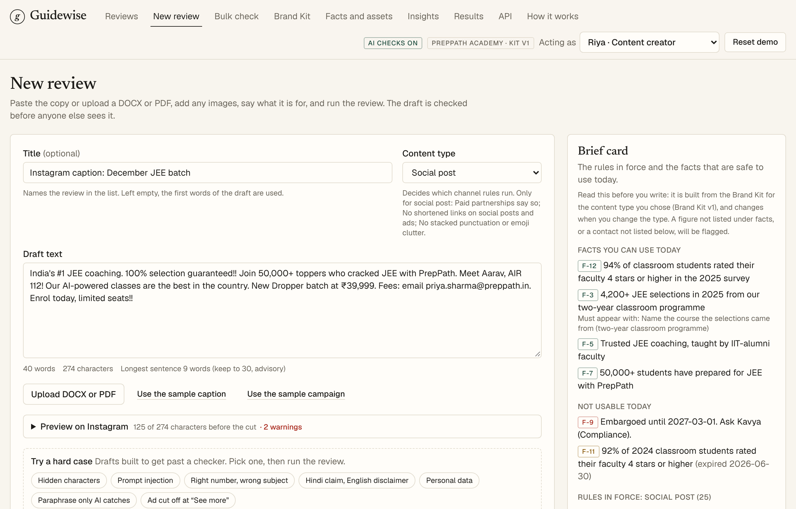
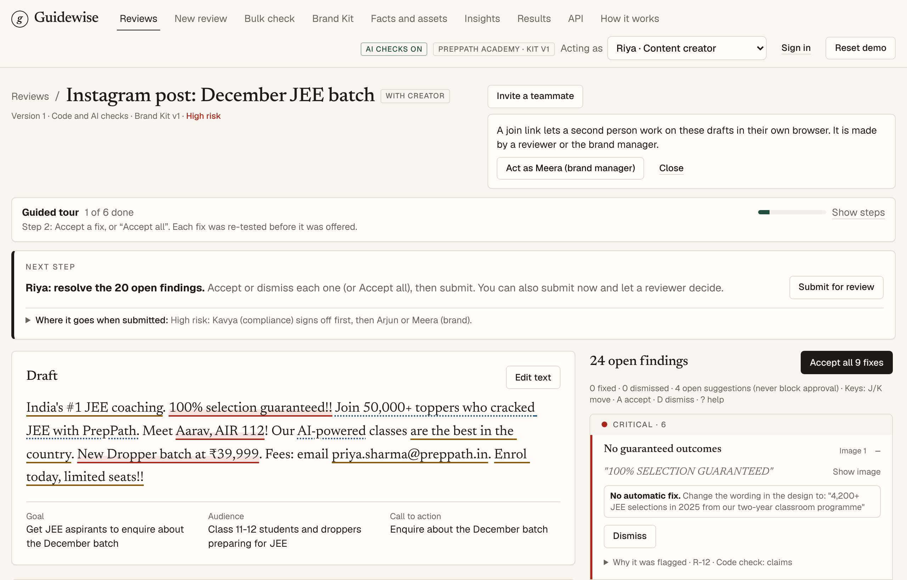

CodeNova India 2026 · Round 3, the final product · Team Guide Wise
Brand rules that run. Guidewise checks marketing content against a team's own approved rules and dated facts before it is published. Every finding quotes the exact words and the rule it breaks, every fix is re-tested before it is offered, risky content goes to the right reviewer, and a person approves the final version. In Round 3 it learned to follow a change through everything it touches, to govern AI writing tools at the source, and to review a whole campaign at once, and it went out to where people write: a Chrome extension, bulk checks of a content calendar, and read-only links for people outside the team.
| Live product | https://guidewise-kohl.vercel.app · opens with no sign-in (a private demo workspace per visitor); optional sign-in turns it into an organisation's own |
| Source code | https://github.com/mahak867/Guide-wise · 100 commits in the Round 3 window, all after it opened (18 Nov, 11:59 PM IST) |
| Chrome extension | https://github.com/mahak867/Guide-wise/tree/main/extension · load unpacked; install steps in extension/README.md |
| Documentation | In docs/: PRODUCTION.md (from demo to a real team), THREAT_MODEL.md, LOAD_TEST.md, EVAL_HELPERS.md, TESTING.md, ARCHITECTURE.md, API.md, KNOWN_ISSUES.md, ROADMAP.md, CHANGELOG.md |
| Walkthrough video | https://guidewise-kohl.vercel.app/demo.webm (2 minutes, recorded on 21 Nov 2026 from the live site) |
| Demo brand | PrepPath Academy, a fictional JEE/NEET coaching brand written by the team |
| Team | Mahak Fahad (team leader, Backend + AI/ML) · Roshini R (Frontend + Design/UI-UX) · Chennai Institute of Technology |
Change impact, the API and MCP server, and campaign review with AI vision, each tested on the live site against the exact test we wrote down at Round 2.
Bulk check, a Chrome extension, read-only share links, channel previews, undo and keyboard review, exceptions with end dates and dual sign-off, a database approval gate, 31 Brand Kit rules.
92% precision, 98% recall with AI on 40 held-out drafts. 341 unit tests. Live (21 Nov 2026): journey 21/21, sweep 61/61, probe 268/268, axe 0 issues across 29 page checks. Load: 980 requests, 0 failed.

Try it: Facts and assets → act as Meera → Edit on F-3 → change the figure → Save.
get_brief and check_draft; an in-app playground and a per-key audit trail. Test: check_draft from the playground and from an MCP client gives the app's cited findings and a new audit entry.brief:read, draft:check), shown once, stored as SHA-256, revocable, 30 calls a minute. get_brief returns rules in force and only facts valid today; check_draft runs the app's pipeline. REST (/api/v1) and MCP (/api/mcp, official SDK, Streamable HTTP). The Chrome extension and bulk check build on it.check_draft returns exactly the app's findings over REST and through a real MCP SDK client; missing, wrong, revoked or under-scoped keys are refused; every call is audited; another workspace cannot see the keys.


Try it: New review → Use the sample campaign → Run review.
We asked what a marketing team would need on its first real day, and built that too. Each item has unit tests, live probe checks and a sweep step.

A content calendar goes through at once: paste it or upload a CSV (quoted commas, semicolons and line breaks handled; every problem names its row), up to 50 posts. Each gets the review's code checks with AI off, against one read of the Brand Kit, so 50 posts take seconds and spend no AI quota. The result: a verdict per post, severity counts, the top findings quoted, the rules broken most often, a results CSV guarded against spreadsheet formulas, and Open as a review for the full AI review. Try it: Bulk check → Use a sample calendar → Check 6 posts.

"Check with Guidewise" (Manifest V3, in extension/) checks text selected in LinkedIn, Gmail, X or any page through POST /api/v1/check with a draft:check key, and shows the verdict and each cited finding with Copy fix. It reads a page only when its button is clicked (activeTab), can reach no site but Guidewise, never logs the key, and renders server text as text only. The API sends no CORS header, so web pages still cannot call it with someone's key. Tested by npm run e2e:extension, which loads it in Chromium against the live API.

An approved record can be sent to someone outside the workspace (a franchise owner, an agency, a lawyer) as /r/<token>: valid 30 days, revocable by a reviewer or the brand manager, never by the creator. The token is 32 random bytes and only its SHA-256 hash is stored; unknown, expired and revoked links give the same 404; the public copy shows only the record (no workspace id, author, images or activity) and is noindex and no-store. 17 probe checks.

As you write, the draft is shown as an Instagram caption, a LinkedIn post, a Facebook ad, a WhatsApp message, an email in an inbox or a page's first screen, with the cut marked ("… more"). It warns when a required disclaimer is missing or falls after the cut, when the call to action is hidden, and notes a price or promo code after it. Characters are counted as readers see them: an emoji is one and is never split. Cut-offs are approximate and vary by device, and the panel says so.

"Undo fix" for 10 seconds after accepting a fix, an edited fix or Accept all: the old text returns as a new version and the findings reopen; refused with a clear 409 once the draft has moved on. Keyboard review: J/K move, A accept, D dismiss, U undo, ? help, with a visible focus ring and screen-reader announcements. Each finding says how the team settled the same rule before ("fixed 4 times, dismissed 2 times; last: Approved exception by Kavya").
| Area | What it does |
|---|---|
| Review | Paste copy or upload DOCX/PDF; up to 4 images and 4 campaign documents; goal, audience, call to action, channel, locked phrases no fix may remove; confidential mode (never sent to AI); live word, character and sentence counts; channel previews; a summary of what will be checked before it runs. |
| Code checks | Preferred terms, banned phrases, approved contacts, student results with dated consent, results disclaimer (same-language for Hindi), brand-name spelling, capitals, length per content type, sentence length, inclusive wording, invisible characters, paid-partnership labels, offer end dates, competitor names, vague link text, hashtags, emoji and "!!", and every figure against the Facts Register by subject then value (lakh and crore understood). |
| AI checks | Claims and voice rules, one rule per call, run twice when they find something; disagreement becomes a suggestion. Claude → Groq → Groq's smaller model → Gemini, with time caps, a circuit breaker, Zod validation and a cache. |
| Verifier | Code drops any finding whose quote is not in the draft, image or document, or whose rule or fact does not exist: no source, no flag. |
| Images | In the browser: OCR, palette (CIELAB), WCAG contrast, alt text, logo found by masked cross-correlation and checked for size and clear space. AI vision for stylised text and people shown. |
| Campaigns | Every check on every document and on the text in each creative; prices, figures, dates and promo codes compared across all sources; documents read from a live web page, hidden text flagged. |
| Facts Register | Evidence, owner, valid-from, valid-until, required disclosure, successor; embargoed, expired and wrong-subject figures flagged; every change shows its impact. |
| Fixes | Each fix applied and re-checked before it is offered; edit before accepting; Accept all; undo for 10 seconds. |
| Brand Kit | 31 rules with test sentences and an enforce gate, per-channel rules, versions, JSON export and import, and a guide compiler for pasted text, PDF or Word. |
| Workflow | Four roles enforced on the server; risk routing by a fixed table; dual sign-off for high risk; time-limited exceptions; approval bound to the kit version and gated in the database; comments, versions with word-level changes, request changes, audit log; keyboard review; precedents per rule; approval record with SHA-256 fingerprint; read-only share links; re-approval when a fact or rule change breaks an approved piece. |
| Insights | Most-flagged and most-dismissed rules, unclear rules, fact expiry watch, AI-drafted rule amendments re-tested by code, dismissal rate before and after each amendment. |
| API, MCP, extension, bulk | Scoped, hashed, revocable keys; get_brief and check_draft over REST and MCP; playground; audit trail; rate limit. The Chrome extension and bulk check (up to 50 posts, CSV in and out) use the same governance module. |
| Privacy and security | Emails, phones, Aadhaar, PAN and card numbers masked before any AI call; confidential drafts never sent; CSP and security headers; every route validated with Zod. |
| Usability | One-click sample post, sample campaign and sample calendar; seven hard cases; guided tour; private workspace per visitor; works on a phone; clear empty and error states. |
Only steps 3, 4 and 5 use AI. Numbers are never compared by AI: it only locates claims; code re-reads each value and compares it.
| Layer | Choice and reason |
|---|---|
| App and API | Next.js 16 App Router (TypeScript), React 19, Tailwind CSS 4 on Vercel, functions in Mumbai next to the database. Content-Security-Policy allowing only this site (plus the OCR worker), no framing, nosniff, strict referrer and permissions policies, HSTS. |
| Data | Supabase Postgres, 11 migrations; every row scoped by workspace. Round 3 added drafts.impact, drafts.assets, api_keys (hash only) and an approval trigger (009) that refuses approval while a violation is open. State changes are conditional updates, so the loser of a race gets a 409. |
| Change impact | src/lib/impact.ts: finds drafts that use a fact or rule, re-checks them, moves approved ones back and logs the event, in the same request as the save. |
| Governance module | src/lib/governance.ts holds getBrief and checkDraft, shared by the app, REST, MCP (official SDK, stateless Streamable HTTP), bulk check (/api/bulk, code checks against one read of the kit) and the Chrome extension (popup, not content script, so no CORS opening is needed). All give the same answer. |
| Share links | 32 random bytes per link; only the SHA-256 hash is kept, in the events log (no migration); public route rate-limited, noindex, no-store; personal data masked outside the approved text. |
| Campaigns and vision | consistency.ts compares units across sources; webpage.ts reads a page (address checked before every request and redirect, one 8 s deadline, 2 MB); the verifier grounds each finding in the source it cites. |
| AI adapter | Claude, Groq (gpt-oss-120b, with gpt-oss-20b while it is rate-limited), Gemini 3.5 Flash Lite; 12 s cap (25 s for images); a limited or slow provider is rested; answers cached by text and image hash. |
| Suite | Result | What it covers |
|---|---|---|
| Unit tests (Vitest, CI) | 341 pass | Engine rules, fact matching, logo matching, verifier, fix re-testing, a deliberately wrong AI, provider fallback, change impact, campaign consistency, share links, previews, bulk CSV, the extension's logic, bug-hunt regressions, fuzzing (26 hostile inputs), the sample at three future dates, every rule's own tests |
| Browser journey (live) | 21 of 21 | Review, edit a fix, accept all, replace an image, route, exceptions with an end date, two sign-offs, record, PDF upload, channels, confidential, Brand Kit export and import |
| UI sweep (live) | 61 of 61 | Every page at desktop and phone size and every control, with axe-core: 0 issues across 29 page checks (serious or critical) |
| API probe (live, daily) | 268 of 268 | Every route with bad input, wrong role and another workspace; the three improvements end to end with a real MCP client; share links, undo, exceptions, sign-off, races, security headers |
| Extension (live) | passes | The unpacked extension in Chromium: selections, pasted text, Copy fix, a wrong key, and that web pages still cannot call the API |
| Load test (live) | 980 requests, 0 failed | 20 then 50 concurrent visitors through the creator journey, AI off to keep the free quota for judges |
Live results from the run of 21 Nov 2026. The API probe also runs against the live site every morning from GitHub Actions.
| Evaluation | Precision | Recall | Other |
|---|---|---|---|
| Text, code checks only (40 held-out drafts) | 100% (93%–100%) | 74% (63%–83%) | 0 of 17 hard phrasings |
| Text, code and AI (live, run twice) | 92% (83%–96%) | 98% (92%–100%) | 17 of 17 hard; 83% same on both runs |
| Text, code checks only, second brand (40 held-out drafts, health insurer) | 96.8% (83.8–99.4%) | 78.9% (63.7–88.9%) | 0 of 8 hard phrasings; 10 of 10 clean drafts left alone (first run, before the age and helpline fix: 90.9%, 8 of 10) |
| Text, code checks only, both brands (80 drafts) | 98.8% (93.3–99.8%) | 76.0% (66.9–83.2%) | 20 of 20 clean drafts left alone |
| Images (28 creatives) | 100% (0 false alarms in 66 clean checks) | 26 of 26 | Colour, contrast, logo (incl. recoloured, stretched), text size |
| Privacy (24 + 3 drafts) | 0 leaks in 144 AI prompts | Personal data of 5 kinds; canaries in confidential drafts | |
| Guide compiler (10 passages, before the fixes) | 16 of 17 expected rules; 7 of 8 planted problems warned | 0 false warnings; 15 of 18 proposals pass their own tests | |
| Rule amendment (8 rules, before the fixes) | 7 of 8 accepted by the code gate | Dismissed text still flagged after 7 of 7: the gap the fixes address | |
95% Wilson intervals; test-set fingerprint 4d33aae3cdaa2051, shown on the live Results page, which re-runs the code checks on demand. The AI-helper numbers were measured once, before the fixes listed above, and have not yet been re-measured (docs/EVAL_HELPERS.md). All numbers are optimistic because the team wrote both the rules and the test drafts; real drafts are the first step on the roadmap.
The live site opens with no sign-in so a judge can try it at once; sign-in and organisations are optional. For a coaching centre's marketing team, the engine, the governance module, the workflow rules and the evidence stay exactly the same; these change (docs/PRODUCTION.md):
| Demo today | For a real team | Effort |
|---|---|---|
| A random workspace id per browser; anyone with the link gets a copy | Built (optional): Supabase Auth email and password sign-in; signing up claims the workspace as an organisation, invite links add members with a role the inviter picks, and the server refuses a claimed workspace to anyone who is not a signed-in member (migration 010, src/proxy.ts). Still planned: row-level security per organisation in the database (today the check is in the server, and every table still has the open demo policy), invitations by email, password reset | Row-level security: a few days, plus the existing cross-workspace probe checks run per organisation |
| "Acting as" switches role | Built: in an organisation's workspace each member has one stored role, the switcher is replaced by "Signed in as", a manager changes roles and removes members on /team, and approvals, sign-offs and the activity log record the signed-in person ("Approved by Asha (signed in)") | Done |
| The fictional PrepPath Brand Kit | The team's own brand book through the guide compiler (PDF or Word in, proposed rules with test sentences out, each confirmed by the manager), their facts with evidence and owners, their logo and palette | A first session of about 2 hours per brand with the brand manager; measured in the December pilot |
| Free AI tiers (Groq, Gemini) with code-only fallback | A paid key first, free tiers as fallback, a monthly AI budget per organisation with a warning at 80%; confidential drafts still never leave | Configuration; about ₹1,500 a month for a centre doing 1,500 drafts (estimate in the roadmap) |
| Accuracy measured on drafts we wrote | Precision and recall re-measured on 50 real, anonymised drafts per pilot centre and published beside the synthetic numbers | The December pilot |
| Demo data reset by the visitor | Backups, retention and export per organisation (the Brand Kit already exports as one JSON file) | Supabase Pro plan |
Where it fits a team's day: a writer checks a draft with the Chrome extension, or an AI writing tool calls check_draft over MCP; a month's calendar goes through bulk check; reviews route themselves, with two sign-offs where risk is high; when a fact changes, change impact sends every approved piece that used it back; the manager watches Insights for rules people keep dismissing.
2 people who had not seen Guidewise before tried four tasks on the live site on 20–21 Nov 2026 (review the sample post; find the cross-document mismatches in the sample campaign; update fact F-3 and say what happened to the approved post; create an API key and check a sentence). We watched and did not help unless asked. Tasks done without help: 7 of 8.
| Person | Task 1 | Task 2 | Task 3 | Task 4 | Minutes | What confused them | What they liked |
|---|---|---|---|---|---|---|---|
| T.R. 2nd year CSE | Y | Y | Y | Y | 12 | Nothing; no questions asked | The built-in demo, and that it was simple to operate |
| K.K. Student outside the team | Y | Y | Y | help | 20 | Tried his own draft instead of the demo; it took him a while to understand what happens after a review runs | Explored every tab and button |
What we changed because of it
Y = done without help, help = done with a hint, N = not done. A small group of students, not marketers; the December pilot is the real test.
src/proxy.ts then admits only its signed-in members, Since migration 011 (21 Nov) no table can be read or written with the public key: only the server, with the secret service-role key, reaches them, and the probe checks that the public key is refused on drafts, findings, events, rules, facts and the kit. Isolation between organisations is still enforced by the server's workspace checks rather than by per-organisation row-level security policies, which a direct sign-in to the database would need. Also partial: only events written through log() carry the member's user id; no password reset or email invitations; if the Supabase project requires email confirmation, a new account must confirm before it can sign in (migration 010_accounts.sql must be applied for any of this to switch on).| When | Step | Why | Cost |
|---|---|---|---|
| Dec 2026 | Pilot with 3 coaching centres. Their own guides compiled into Brand Kits; 50 real drafts each reviewed; precision and recall re-measured on those drafts and published beside the synthetic numbers. | Our numbers come from a set we wrote. Real drafts are the honest test. | Free tiers; about 20 hours of our time per centre |
| Dec 2026 | Accounts and organisations. Supabase Auth with the four roles, an organisation per centre, row-level security per organisation, invitations. | Replaces the demo role switcher (known issue 1). | Supabase Pro ₹2,100 (US$25) |
| Jan 2027 | Paid AI tier with a second provider. One paid key as the first choice, free tiers as fallback; per-organisation monthly AI budget with a warning at 80%. | Removes the free-tier rate limits (known issue 2). | Estimate: about 20 AI calls of about 2,000 tokens each per draft, under ₹1 per draft on a paid open-model tier; about ₹1,500 a month for a centre doing 1,500 drafts |
| Jan 2027 | Change impact, scheduled. A daily job that expires facts on their end date and runs the impact check, emailing the owner of every piece sent back for re-approval. | Today the impact check runs when someone edits a fact; expiry should not need a person. | Vercel Cron, included |
| Feb 2027 | Publishing integrations. Instagram, WhatsApp Business and Google Docs add-ons that call check_draft before posting, using the API built in Round 3. | Checks happen where people already write. | Developer time; API costs as above |
| Mar 2027 | Visual depth. Logo variants (reversed, monochrome) from an asset library; layout rules (logo position, minimum text size); vision checks for claims set in images of documents. | Known issues 4 and 10. | Vision calls about ₹0.5 per image |
| Q2 2027 | Regulation packs beyond coaching. ASCI guidelines for ed-tech, health and finance claims, each with tests and cited sources, reviewed by a lawyer before release. | The same engine serves other regulated sectors. | Legal review ₹30,000–50,000 per pack (one-off) |
| Q2 2027 | Pricing. Free for one user and 30 drafts a month; ₹1,999 a month per centre for the team plan with the API. | Covers AI and hosting at about 40% margin at 1,500 drafts a month. | — |
What we will measure: precision and recall on real pilot drafts (target above 90% with AI), time from draft to approval before and after, and whether rule amendments bring dismissals down.
| Member | Role | College | Course |
|---|---|---|---|
| Mahak Fahad (team leader) | Backend + AI / ML | Chennai Institute of Technology | B.E. Computer Science and Engineering, batch of 2029 |
| Roshini R | Frontend + Design / UI-UX | Chennai Institute of Technology | B.E. Computer Science and Engineering, batch of 2029 |